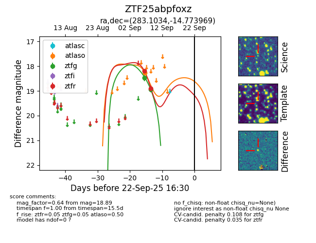
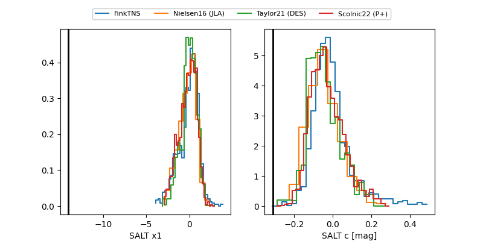

FINK: ZTF25abpfoxz
Lasair: ZTF25abpfoxz
ALeRCE: ZTF25abpfoxz
ZTF25abpfoxz (ztf,fink)
equatorial (ra, dec) = (283.1034,-14.77397)
galactic (l, b) = (19.8283,-6.88880)


last atlaso=18.27, ztfg=18.93, ztfr=18.89
1 atlaso, 2 ztfg, 2 ztfr detections